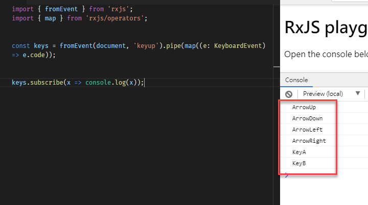

[RxJS] 應用練習 - sequenceEqual
今天在 medium 上面看到一篇有趣的文章，他的主題是 How to detect a sequence of keystrokes in JavaScript，那讓我用 RxJS 來挑戰一下，順便回味一下以前打電動需要輸入一系列的指令才可以開啟密技的樂趣
挑戰
當使用者在畫面上輸入了 **上上下下左右左右 BA **，就跳出
密技開啟的訊息
-
擷取
keyup事件，這個簡單1
const keys = fromEvent(document, 'keyup');
-
我們先用
code來作為判斷的規則1
const keys = fromEvent(document, 'keyup').pipe(map(e=> e.code));

-
準備開啟密技所需要的條件
1
2
3
4
5
6
7
8
9
10
11
12const codes = [
'ArrowUp',
'ArrowUp',
'ArrowDown',
'ArrowDown',
'ArrowLeft',
'ArrowRight',
'ArrowLeft',
'ArrowRight',
'KeyB',
'KeyA'
];
這裡先暫停一下，要解這一個題目，只要將步驟 2 所收集到的 code 與步驟 3 的條件做比對，如果相同就可以啟動密技了
-
收集 10 個
keyup事件1
2
3const keyCorrection = keys.pipe(
bufferCount(10)
);-
bufferCount:1
bufferCount<T>(bufferSize: number, startBufferEvery: number = null)
-
-
比較陣列的值
1
2
3
4const matches = keyCorrection.pipe(
map(result => codes.every((item, idx) => item === result[idx]))
);
matches.subscribe(x => console.log(x));這樣子當次輸入 10 次項目時，就會做一次比對結果，這樣子結果是對的，但好像沒那麼漂亮
漂亮一點的解法
先來調整一下 keyCorrection 的寫法，讓在第一次收集完 keyup 事件後，之後每一次的keyup 事件都會送出值
1 | const keyCorrection = keys.pipe( |
再來修正比較的部份，這裡介紹一個 operator, sequenceEqual，這一個方法的功用是比較兩個 Observable 的值發生的順序是否一樣
1 | sequenceEqual<T>(compareTo: Observable<T>, comparator?: (a: T, b: T) => boolean): OperatorFunction<T, boolean> |
將 matches 的部份調整一下
1 | const matches = keyCorrection.pipe( |
經過這樣子的修正後，一樣可以達到一樣的效果，最後在修飾一下，完整的程式碼如下
1 | import { fromEvent, from } from 'rxjs'; |